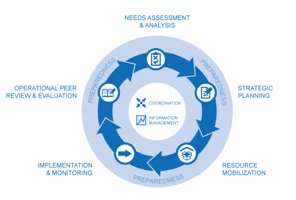
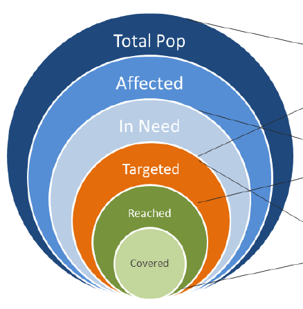
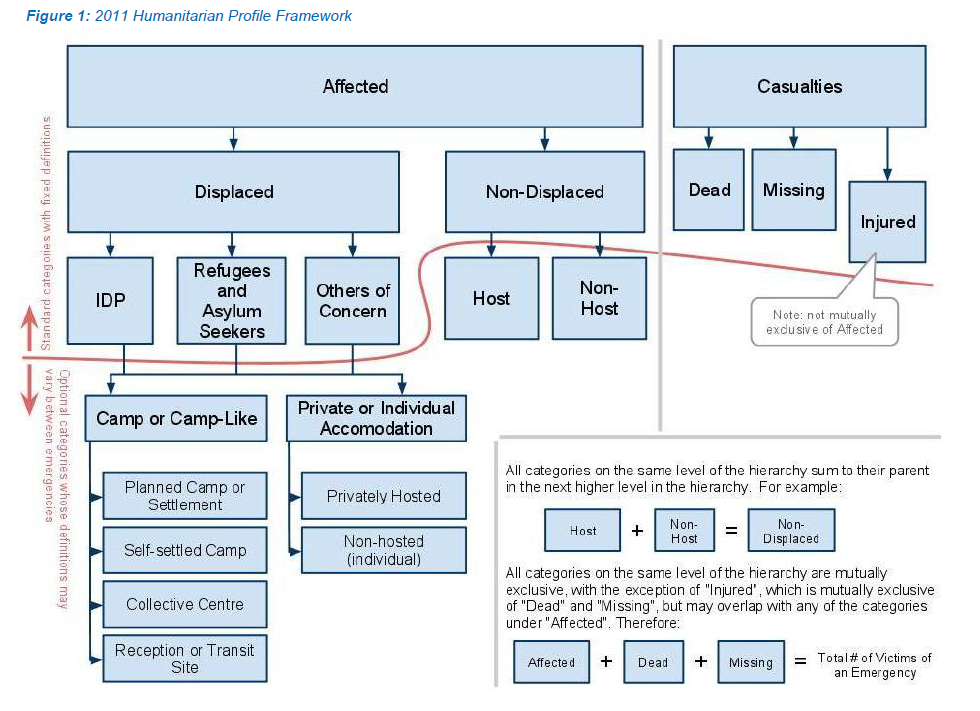
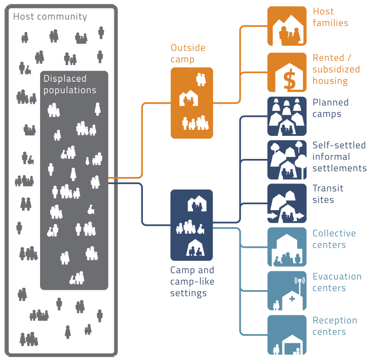

8 The role of IM in the Cluster
Part 3 of the IM handbook is in a zero draft phase. Both the structure and content are likley to change significantly
The role of Information Management in the CCCM Cluster at country-level is best viewed through the lens of the six core functions:1
- To support service delivery by:
- Providing a platform that ensures service delivery is driven by the Humanitarian Response Plan and strategic priorities.
- Developing mechanisms to eliminate duplication of service delivery.
The IM role supports service delivery by ensuring information systems are in place to understand where CCCM partners and activities are conducted, where there are gaps or overlaps and how those activities are meeting the overall objectives and targets decided upon by the cluster.
- To inform the HC/HCT’s strategic decision-making by:
- Preparing needs assessments and analysis of gaps (across and within clusters, using information management tools as needed) to inform the setting of priorities.
- Identifying and finding solutions for (emerging) gaps, obstacles,duplication and cross-cutting issues.
- Formulating priorities on the basis of analysis.
By collecting and analysing CCCM needs to inform; an understanding of gaps; barriers for the response; where and whom requires prioritization.
- To plan and implement cluster strategies by:
- Developing sectoral plans, objectives and indicators that directly support realization of the overall response’s strategic objectives.
- Applying and adhering to common standards and guidelines.
- Clarifying funding requirements, helping to set priorities, and agreeing cluster contributions to the HC’s overall humanitarian funding proposals.
To support the setting of measurable objectives and indicators, the categorization of activities and cost estimations for these activities or projects.
- To monitor and evaluate performance by:
- Monitoring and reporting on activities and needs.
- Measuring progress against the cluster strategy and agreed results.
- Recommending corrective action where necessary.
To manage systems that monitor collective progress against the set targets and objected.
- To build national capacity in preparedness and contingency planning.
To disseminate the above skills, systems and processes to national and local levels to ensure national-level preparedness on systems and skills relevant to CCCM.
- To support robust advocacy by:
- Identifying concerns, and contributing key information and messages to HC and HCT messaging and action.
- Undertaking advocacy on behalf of the cluster, cluster members, and affected people.
Evidence-based advocacy, to inform strategic decision making and to represent the challenges, needs and achievements of the cluster.
8.1 The Humanitarian Program Cycle

The humanitarian programme cycle (HPC) is a coordinated series of actions undertaken to help prepare for, manage and deliver humanitarian response. It consists of five elements coordinated in a seamless manner, with one step logically building on the previous and leading to the next. Successful implementation of the humanitarian programme cycle is dependent on effective emergency preparedness, effective coordination with national/local authorities and humanitarian actors, and information management. 2
8.2 Cross-cutting themes
8.2.1 Data Responsibility
8.2.2 Knowledge Management
8.2.3 Preparedness
8.3 Useful Conceptual Aids
8.3.1 The Onion Model of Population Categories

8.3.2 Profile Framework / CCCM Site Typology

